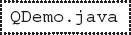
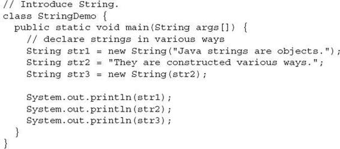
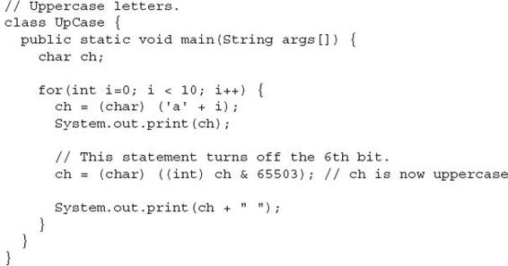
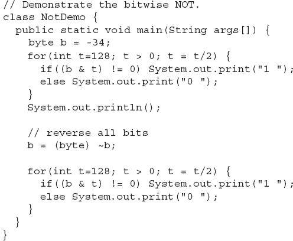

Chapter 5
More Data Types and Operators
Key Skills & Concepts
 Understand and create arrays
Understand and create arrays Create multidimensional arrays
Create irregular arrays
Know the alternative array declaration syntax
Assign array references
Use the length array member
Use the for-each style for loop
Work with strings
Apply command-line arguments
Use the bitwise operators
Apply the ? operator
This chapter returns to the subject of Java’s data types and operators. It discusses arrays, the String type, the bitwise operators, and the ? ternary operator. It also covers Java’s for-each style for loop. Along the way, command-line arguments are described.
Arrays
An array is a collection of variables of the same type, referred to by a common name. In Java, arrays can have one or more dimensions, although the one-dimensional array is the most common. Arrays are used for a variety of purposes because they offer a convenient means of grouping together related variables. For example, you might use an array to hold a record of the daily high temperature for a month, a list of stock price averages, or a list of your collection of programming books.
The principal advantage of an array is that it organizes data in such a way that it can be easily manipulated. For example, if you have an array containing the incomes for a selected group of households, it is easy to compute the average income by cycling through the array. Also, arrays organize data in such a way that it can be easily sorted.
Although arrays in Java can be used just like arrays in other programming languages, they have one special attribute: they are implemented as objects. This fact is one reason that a discussion of arrays was deferred until objects had been introduced. By implementing arrays as objects, several important advantages are gained, not the least of which is that unused arrays can be garbage collected.
One-Dimensional Arrays
A one-dimensional array is a list of related variables. Such lists are common in programming. For example, you might use a one-dimensional array to store the account numbers of the active users on a network. Another array might be used to store the current batting averages for a baseball team.
To declare a one-dimensional array, you can use this general form:
type array-name[ ] = new type[size];
Here, type declares the element type of the array. (The element type is also commonly referred to as the base type.) The element type determines the data type of each element contained in the array. The number of elements that the array will hold is determined by size. Since arrays are implemented as objects, the creation of an array is a two-step process. First, you declare an array reference variable. Second, you allocate memory for the array, assigning a reference to that memory to the array variable. Thus, arrays in Java are dynamically allocated using the new operator.
Here is an example. The following creates an int array of 10 elements and links it to an array reference variable named sample:
This declaration works just like an object declaration. The sample variable holds a reference to the memory allocated by new. This memory is large enough to hold 10 elements of type int. As with objects, it is possible to break the preceding declaration in two. For example:
In this case, when sample is first created, it refers to no physical object. It is only after the second statement executes that sample is linked with an array.
An individual element within an array is accessed by use of an index. An index describes the position of an element within an array. In Java, all arrays have zero as the index of their first element. Because sample has 10 elements, it has index values of 0 through 9. To index an array, specify the number of the element you want, surrounded by square brackets. Thus, the first element in sample is sample[0], and the last element is sample[9]. For example, the following program loads sample with the numbers 0 through 9:
The output from the program is shown here:
Conceptually, the sample array looks like this:
Arrays are common in programming because they let you deal easily with large numbers of related variables. For example, the following program finds the minimum and maximum values stored in the nums array by cycling through the array using a for loop:
The output from the program is shown here:
In the preceding program, the nums array was given values by hand, using 10 separate assignment statements. Although perfectly correct, there is an easier way to accomplish this. Arrays can be initialized when they are created. The general form for initializing a one-dimensional array is shown here:
type array-name[ ] = { val1, val2, val3, …, valN };
Here, the initial values are specified by val1 through valN. They are assigned in sequence, left to right, in index order. Java automatically allocates an array large enough to hold the initializers that you specify. There is no need to explicitly use the new operator. For example, here is a better way to write the MinMax program:
Array boundaries are strictly enforced in Java; it is a run-time error to overrun or underrun the end of an array. If you want to confirm this for yourself, try the following program that purposely overruns an array:
As soon as i reaches 10, an ArrayIndexOutOfBoundsException is generated and the program is terminated.
| Try This 5-1 |
Sorting an Array |
Because a one-dimensional array organizes data into an indexable linear list, it is the perfect data structure for sorting. In this project you will learn a simple way to sort an array. As you may know, there are a number of different sorting algorithms. There are the quick sort, the shaker sort, and the shell sort, to name just three. However, the best known, simplest, and easiest to understand is called the Bubble sort. Although the Bubble sort is not very efficient—in fact, its performance is unacceptable for sorting large arrays—it may be used effectively for sorting small arrays.
1. Create a file called Bubble.java.
2. The Bubble sort gets its name from the way it performs the sorting operation. It uses the repeated comparison and, if necessary, exchange of adjacent elements in the array. In this process, small values move toward one end and large ones toward the other end. The process is conceptually similar to bubbles finding their own level in a tank of water. The Bubble sort operates by making several passes through the array, exchanging out-of-place elements when necessary. The number of passes required to ensure that the array is sorted is equal to one less than the number of elements in the array.
Here is the code that forms the core of the Bubble sort. The array being sorted is called nums.
Notice that sort relies on two for loops. The inner loop checks adjacent elements in the array, looking for out-of-order elements. When an out-of-order element pair is found, the two elements are exchanged. With each pass, the smallest of the remaining elements moves into its proper location. The outer loop causes this process to repeat until the entire array has been sorted.
3. Here is the entire Bubble program:
The output from the program is shown here:
4. Although the Bubble sort is good for small arrays, it is not efficient when used on larger ones. The best general-purpose sorting algorithm is the Quicksort. The Quicksort, however, relies on features of Java that you have not yet learned about.
Multidimensional Arrays
Although the one-dimensional array is the most commonly used array in programming, multidimensional arrays (arrays of two or more dimensions) are certainly not rare. In Java, a multidimensional array is an array of arrays.
Two-Dimensional Arrays
The simplest form of the multidimensional array is the two-dimensional array. A two-dimensional array is, in essence, a list of one-dimensional arrays. To declare a two-dimensional integer array table of size 10, 20 you would write
Pay careful attention to the declaration. Unlike some other computer languages, which use commas to separate the array dimensions, Java places each dimension in its own set of brackets. Similarly, to access point 3, 5 of array table, you would use table[3][5].
In the next example, a two-dimensional array is loaded with the numbers 1 through 12.
In this example, table[0][0] will have the value 1, table[0][1] the value 2, table[0][2] the value 3, and so on. The value of table[2][3] will be 12. Conceptually, the array will look like that shown in Figure 5-1.
Figure 5-1 Conceptual view of the table array by the TwoD program
Irregular Arrays
When you allocate memory for a multidimensional array, you need to specify only the memory for the first (leftmost) dimension. You can allocate the remaining dimensions separately. For example, the following code allocates memory for the first dimension of table when it is declared. It allocates the second dimension manually.
Although there is no advantage to individually allocating the second dimension arrays in this situation, there may be in others. For example, when you allocate dimensions separately, you do not need to allocate the same number of elements for each index. Since multidimensional arrays are implemented as arrays of arrays, the length of each array is under your control. For example, assume you are writing a program that stores the number of passengers that ride an airport shuttle. If the shuttle runs 10 times a day during the week and twice a day on Saturday and Sunday, you could use the riders array shown in the following program to store the information. Notice that the length of the second dimension for the first five indices is 10 and the length of the second dimension for the last two indices is 2.
The use of irregular (or ragged) multidimensional arrays is not recommended for most applications, because it runs contrary to what people expect to find when a multidimensional array is encountered. However, irregular arrays can be used effectively in some situations. For example, if you need a very large two-dimensional array that is sparsely populated (that is, one in which not all of the elements will be used), an irregular array might be a perfect solution.
Arrays of Three or More Dimensions
Java allows arrays with more than two dimensions. Here is the general form of a multidimensional array declaration:
type name[ ][ ]…[ ] = new type[size1][size2]…[sizeN];
For example, the following declaration creates a 4 × 10 × 3 three-dimensional integer array.
Initializing Multidimensional Arrays
A multidimensional array can be initialized by enclosing each dimension’s initializer list within its own set of curly braces. For example, the general form of array initialization for a two-dimensional array is shown here:
Here, val indicates an initialization value. Each inner block designates a row. Within each row, the first value will be stored in the first position of the subarray, the second value in the second position, and so on. Notice that commas separate the initializer blocks and that a semicolon follows the closing }.
For example, the following program initializes an array called sqrs with the numbers 1 through 10 and their squares:
Here is the output from the program:
Alternative Array Declaration Syntax
There is a second form that can be used to declare an array:
type[ ] var-name;
Here, the square brackets follow the type specifier, not the name of the array variable. For example, the following two declarations are equivalent:
The following declarations are also equivalent:
This alternative declaration form offers convenience when declaring several arrays at the same time. For example,
This creates three array variables of type int. It is the same as writing
The alternative declaration form is also useful when specifying an array as a return type for a method. For example,
This declares that someMeth( ) returns an array of type int.
Because both forms of array declarations are in widespread use, both are used in this book.
Assigning Array References
As with other objects, when you assign one array reference variable to another, you are simply changing what object that variable refers to. You are not causing a copy of the array to be made, nor are you causing the contents of one array to be copied to the other. For example, consider this program:
The output from the program is shown here:
As the output shows, after the assignment of nums1 to nums2, both array reference variables refer to the same object.
Using the length Member
Because arrays are implemented as objects, each array has associated with it a length instance variable that contains the number of elements that the array can hold. (In other words, length contains the size of the array.) Here is a program that demonstrates this property:
This program displays the following output:
Pay special attention to the way length is used with the two-dimensional array table. As explained, a two-dimensional array is an array of arrays. Thus, when the expression
is used, it obtains the number of arrays stored in table, which is 3 in this case. To obtain the length of any individual array in table, you will use an expression such as this,
which, in this case, obtains the length of the first array.
One other thing to notice in LengthDemo is the way that list.length is used by the for loops to govern the number of iterations that take place. Since each array carries with it its own length, you can use this information rather than manually keeping track of an array’s size. Keep in mind that the value of length has nothing to do with the number of elements that are actually in use. It contains the number of elements that the array is capable of holding.
The inclusion of the length member simplifies many algorithms by making certain types of array operations easier—and safer—to perform. For example, the following program uses length to copy one array to another while preventing an array overrun and its attendant runtime exception.
Here, length helps perform two important functions. First, it is used to confirm that the target array is large enough to hold the contents of the source array. Second, it provides the termination condition of the for loop that performs the copy. Of course, in this simple example, the sizes of the arrays are easily known, but this same approach can be applied to a wide range of more challenging situations.
| Try This 5-2 |
A Queue Class |

As you may know, a data structure is a means of organizing data. The simplest data structure is the array, which is a linear list that supports random access to its elements. Arrays are often used as the underpinning for more sophisticated data structures, such as stacks and queues. A stack is a list in which elements can be accessed in first-in, last-out (FILO) order only. A queue is a list in which elements can be accessed in first-in, first-out (FIFO) order only. Thus, a stack is like a stack of plates on a table—the first down is the last to be used. A queue is like a line at a bank—the first in line is the first served.
What makes data structures such as stacks and queues interesting is that they combine storage for information with the methods that access that information. Thus, stacks and queues are data engines in which storage and retrieval are provided by the data structure itself, not manually by your program. Such a combination is, obviously, an excellent choice for a class, and in this project you will create a simple queue class.
In general, queues support two basic operations: put and get. Each put operation places a new element on the end of the queue. Each get operation retrieves the next element from the front of the queue. Queue operations are consumptive: once an element has been retrieved, it cannot be retrieved again. The queue can also become full, if there is no space available to store an item, and it can become empty, if all of the elements have been removed.
One last point: There are two basic types of queues—circular and noncircular. A circular queue reuses locations in the underlying array when elements are removed. A noncircular queue does not reuse locations and eventually becomes exhausted. For the sake of simplicity, this example creates a noncircular queue, but with a little thought and effort, you can easily transform it into a circular queue.
1. Create a file called QDemo.java.
2. Although there are other ways to support a queue, the method we will use is based upon an array. That is, an array will provide the storage for the items put into the queue. This array will be accessed through two indices. The put index determines where the next element of data will be stored. The get index indicates at what location the next element of data will be obtained. Keep in mind that the get operation is consumptive, and it is not possible to retrieve the same element twice. Although the queue that we will be creating stores characters, the same logic can be used to store any type of object. Begin creating the Queue class with these lines:
3. The constructor for the Queue class creates a queue of a given size. Here is the Queue constructor:
Notice that the put and get indices are initially set to zero.
4. The put( ) method, which stores elements, is shown next:
The method begins by checking for a queue-full condition. If putloc is equal to one past the last location in the q array, there is no more room in which to store elements. Otherwise, the new element is stored at that location and putloc is incremented. Thus, putloc is always the index where the next element will be stored.
5. To retrieve elements, use the get( ) method, shown next:
Notice first the check for queue-empty. If getloc and putloc both index the same element, the queue is assumed to be empty. This is why getloc and putloc were both initialized to zero by the Queue constructor. Then, the next element is returned. In the process, getloc is incremented. Thus, getloc always indicates the location of the next element to be retrieved.
6. Here is the entire QDemo.java program:
7. The output produced by the program is shown here:
8. On your own, try modifying Queue so that it stores other types of objects. For example, have it store ints or doubles.
The For-Each Style for Loop
When working with arrays, it is common to encounter situations in which each element in an array must be examined, from start to finish. For example, to compute the sum of the values held in an array, each element in the array must be examined. The same situation occurs when computing an average, searching for a value, copying an array, and so on. Because such “start to finish” operations are so common, Java defines a second form of the for loop that streamlines this operation.
The second form of the for implements a “for-each” style loop. A for-each loop cycles through a collection of objects, such as an array, in strictly sequential fashion, from start to finish. In recent years, for-each style loops have gained popularity among both computer language designers and programmers. Originally, Java did not offer a for-each style loop. However, with the release of JDK 5, the for loop was enhanced to provide this option. The for-each style of for is also referred to as the enhanced
for
loop. Both terms are used in this book.
The general form of the for-each style for is shown here.
for(type itr-var : collection) statement-block
Here, type specifies the type, and itr-var specifies the name of an iteration variable that will receive the elements from a collection, one at a time, from beginning to end. The collection being cycled through is specified by collection. There are various types of collections that can be used with the for, but the only type used in this book is the array. With each iteration of the loop, the next element in the collection is retrieved and stored in itr-var. The loop repeats until all elements in the collection have been obtained. Thus, when iterating over an array of size N, the enhanced for obtains the elements in the array in index order, from 0 to N–1.
Because the iteration variable receives values from the collection, type must be the same as (or compatible with) the elements stored in the collection. Thus, when iterating over arrays, type must be compatible with the element type of the array.
To understand the motivation behind a for-each style loop, consider the type of for loop that it is designed to replace. The following fragment uses a traditional for loop to compute the sum of the values in an array:
To compute the sum, each element in nums is read, in order, from start to finish. Thus, the entire array is read in strictly sequential order. This is accomplished by manually indexing the nums array by i, the loop control variable. Furthermore, the starting and ending value for the loop control variable, and its increment, must be explicitly specified.
Ask the Expert
Q: Aside from arrays, what other types of collections can the for-each style for loop cycle through?
A: One of the most important uses of the for-each style for is to cycle through the contents of a collection defined by the Collections Framework. The Collections Framework is a set of classes that implement various data structures, such as lists, vectors, sets, and maps. A discussion of the Collections Framework is beyond the scope of this book, but complete coverage of the Collections Framework can be found in my book Java: The Complete Reference, Ninth Edition (Oracle Press/McGraw-Hill Education, 2014).
The for-each style for automates the preceding loop. Specifically, it eliminates the need to establish a loop counter, specify a starting and ending value, and manually index the array. Instead, it automatically cycles through the entire array, obtaining one element at a time, in sequence, from beginning to end. For example, here is the preceding fragment rewritten using a for-each version of the for:
With each pass through the loop, x is automatically given a value equal to the next element in nums. Thus, on the first iteration, x contains 1, on the second iteration, x contains 2, and so on. Not only is the syntax streamlined, it also prevents boundary errors.
Here is an entire program that demonstrates the for-each version of the for just described:
The output from the program is shown here:
As this output shows, the for-each style for automatically cycles through an array in sequence from the lowest index to the highest.
Although the for-each for loop iterates until all elements in an array have been examined, it is possible to terminate the loop early by using a break statement. For example, this loop sums only the first five elements of nums:
There is one important point to understand about the for-each style for loop. Its iteration variable is “read-only” as it relates to the underlying array. An assignment to the iteration variable has no effect on the underlying array. In other words, you can’t change the contents of the array by assigning the iteration variable a new value. For example, consider this program:
The first for loop increases the value of the iteration variable by a factor of 10. However, this assignment has no effect on the underlying array nums, as the second for loop illustrates. The output, shown here, proves this point:
Iterating Over Multidimensional Arrays
The enhanced for also works on multidimensional arrays. Remember, however, that in Java, multidimensional arrays consist of arrays of arrays. (For example, a two-dimensional array is an array of one-dimensional arrays.) This is important when iterating over a multidimensional array because each iteration obtains the next array, not an individual element. Furthermore, the iteration variable in the for loop must be compatible with the type of array being obtained. For example, in the case of a two-dimensional array, the iteration variable must be a reference to a one-dimensional array. In general, when using the for-each for to iterate over an array of N dimensions, the objects obtained will be arrays of N–1 dimensions. To understand the implications of this, consider the following program. It uses nested for loops to obtain the elements of a two-dimensional array in row order, from first to last.
The output from this program is shown here:
In the program, pay special attention to this line:
Notice how x is declared. It is a reference to a one-dimensional array of integers. This is necessary because each iteration of the for obtains the next array in nums, beginning with the array specified by nums[0]. The inner for loop then cycles through each of these arrays, displaying the values of each element.
Applying the Enhanced for
Since the for-each style for can only cycle through an array sequentially, from start to finish, you might think that its use is limited. However, this is not true. A large number of algorithms require exactly this mechanism. One of the most common is searching. For example, the following program uses a for loop to search an unsorted array for a value. It stops if the value is found.
The for-each style for is an excellent choice in this application because searching an unsorted array involves examining each element in sequence. (Of course, if the array were sorted, a binary search could be used, which would require a different style loop.) Other types of applications that benefit from for-each style loops include computing an average, finding the minimum or maximum of a set, looking for duplicates, and so on.
Now that the for-each style for has been introduced, it will be used where appropriate throughout the remainder of this book.
Strings
From a day-to-day programming standpoint, one of the most important of Java’s data types is String. String defines and supports character strings. In many other programming languages, a string is an array of characters. This is not the case with Java. In Java, strings are objects.
Actually, you have been using the String class since Chapter 1, but you did not know it. When you create a string literal, you are actually creating a String object. For example, in the statement
the string "In Java, strings are objects." is automatically made into a String object by Java. Thus, the use of the String class has been “below the surface” in the preceding programs. In the following sections, you will learn to handle it explicitly. Be aware, however, that the String class is quite large, and we will only scratch its surface here. It is a class that you will want to explore on its own.
Constructing Strings
You can construct a String just like you construct any other type of object: by using new and calling the String constructor. For example:
This creates a String object called str that contains the character string "Hello". You can also construct a String from another String. For example:
After this sequence executes, str2 will also contain the character string "Hello".
Another easy way to create a String is shown here:
In this case, str is initialized to the character sequence "Java strings are powerful."
Once you have created a String object, you can use it anywhere that a quoted string is allowed. For example, you can use a String object as an argument to println( ), as shown in this example:

The output from the program is shown here:
Operating on Strings
The String class contains several methods that operate on strings. Here are the general forms for a few:
| boolean equals(str) |
Returns true if the invoking string contains the same character sequence as str. |
| int length( ) |
Obtains the length of a string. |
| char charAt(index) |
Obtains the character at the index specified by index. |
| int compareTo(str) |
Returns less than zero if the invoking string is less than str, greater than zero if the invoking string is greater than str, and zero if the strings are equal. |
| int indexOf(str) |
Searches the invoking string for the substring specified by str. Returns the index of the first match or –1 on failure. |
| int lastIndexOf(str) |
Searches the invoking string for the substring specified by str. Returns the index of the last match or –1 on failure. |
Here is a program that demonstrates these methods:
This program generates the following output:
You can concatenate (join together) two strings using the + operator. For example, this statement
initializes str4 with the string "OneTwoThree".
Ask the Expert
Q: Why does String define the equals( ) method? Can’t I just use ==?
A: The equals( ) method compares the character sequences of two String objects for equality. Applying the == to two String references simply determines whether the two references refer to the same object.
Arrays of Strings
Like any other data type, strings can be assembled into arrays. For example:
Here is the output from this program:
Strings Are Immutable
The contents of a String object are immutable. That is, once created, the character sequence that makes up the string cannot be altered. This restriction allows Java to implement strings more efficiently. Even though this probably sounds like a serious drawback, it isn’t. When you need a string that is a variation on one that already exists, simply create a new string that contains the desired changes. Since unused String objects are automatically garbage collected, you don’t even need to worry about what happens to the discarded strings. It must be made clear, however, that String reference variables may, of course, change the object to which they refer. It is just that the contents of a specific String object cannot be changed after it is created.
Ask the Expert
Q: You say that once created, String objects are immutable. I understand that, from a practical point of view, this is not a serious restriction, but what if I want to create a string that can be changed?
A: You’re in luck. Java offers a class called StringBuffer, which creates string objects that can be changed. For example, in addition to the charAt( ) method, which obtains the character at a specific location, StringBuffer defines setCharAt( ), which sets a character within the string. Java also supplies StringBuilder, which is related to StringBuffer, and also supports strings that can be changed. However, for most purposes you will want to use String, not StringBuffer or StringBuilder.
To fully understand why immutable strings are not a hindrance, we will use another of String’s methods: substring( ). The substring( ) method returns a new string that contains a specified portion of the invoking string. Because a new String object is manufactured that contains the substring, the original string is unaltered, and the rule of immutability remains intact. The form of substring( ) that we will be using is shown here:
String substring(int startIndex, int endIndex)
Here, startIndex specifies the beginning index, and endIndex specifies the stopping point. Here is a program that demonstrates substring( ) and the principle of immutable strings:
Here is the output from the program:
As you can see, the original string orgstr is unchanged, and substr contains the substring.
Using a String to Control a switch Statement
As explained in Chapter 3, prior to JDK 7, a switch had to be controlled by an integer type, such as int or char. This precluded the use of a switch in situations in which one of several actions is selected based on the contents of a string. Instead, an if-else-if ladder was the typical solution. Although an if-else-if ladder is semantically correct, a switch statement would be the more natural idiom for such a selection. Fortunately, this situation has been remedied. Today, you can use a String to control a switch. This results in more readable, streamlined code in many situations.
Here is an example that demonstrates controlling a switch with a String:
As you would expect, the output from the program is
The string contained in command (which is "cancel" in this program) is tested against the case constants. When a match is found (as it is in the second case), the code sequence associated with that sequence is executed.
Being able to use strings in a switch statement can be very convenient and can improve the readability of some code. For example, using a string-based switch is an improvement over using the equivalent sequence of if/else statements. However, switching on strings can be less efficient than switching on integers. Therefore, it is best to switch on strings only in cases in which the controlling data is already in string form. In other words, don’t use strings in a switch unnecessarily.
Using Command-Line Arguments
Now that you know about the String class, you can understand the args parameter to main( ) that has been in every program shown so far. Many programs accept what are called command-line arguments. A command-line argument is the information that directly follows the program’s name on the command line when it is executed. To access the command-line arguments inside a Java program is quite easy—they are stored as strings in the String array passed to main( ). For example, the following program displays all of the command-line arguments that it is called with:
If CLDemo is executed like this,
you will see the following output:
Notice that the first argument is stored at index 0, the second argument is stored at index 1, and so on.
To get a taste of the way command-line arguments can be used, consider the next program. It takes one command-line argument that specifies a person’s name. It then searches through a two-dimensional array of strings for that name. If it finds a match, it displays that person’s telephone number.
Here is a sample run:
The Bitwise Operators
In Chapter 2 you learned about Java’s arithmetic, relational, and logical operators. Although these are the most commonly used, Java provides additional operators that expand the set of problems to which Java can be applied: the bitwise operators. The bitwise operators can be used on values of type long, int, short, char, or byte. Bitwise operations cannot be used on boolean, float, or double, or class types. They are called the bitwise operators because they are used to test, set, or shift the individual bits that make up a value. Bitwise operations are important to a wide variety of systems-level programming tasks in which status information from a device must be interrogated or constructed. Table 5-1 lists the bitwise operators.
Table 5-1 The Bitwise Operators
The Bitwise AND, OR, XOR, and NOT Operators
The bitwise operators AND, OR, XOR, and NOT are &, |, ^, and ~. They perform the same operations as their Boolean logical equivalents described in Chapter 2. The difference is that the bitwise operators work on a bit-by-bit basis. The following table shows the outcome of each operation using 1’s and 0’s:
In terms of its most common usage, you can think of the bitwise AND as a way to turn bits off. That is, any bit that is 0 in either operand will cause the corresponding bit in the outcome to be set to 0. For example:
The following program demonstrates the & by turning any lowercase letter into uppercase by resetting the 6th bit to 0. As the Unicode/ASCII character set is defined, the lowercase letters are the same as the uppercase ones except that the lowercase ones are greater in value by exactly 32. Therefore, to transform a lowercase letter to uppercase, just turn off the 6th bit, as this program illustrates:

The output from this program is shown here:
The value 65,503 used in the AND statement is the decimal representation of 1111 1111 1101 1111. Thus, the AND operation leaves all bits in ch unchanged except for the 6th one, which is set to 0.
The AND operator is also useful when you want to determine whether a bit is on or off. For example, this statement determines whether bit 4 in status is set:
The number 8 is used because it translates into a binary value that has only the 4th bit set. Therefore, the if statement can succeed only when bit 4 of status is also on. An interesting use of this concept is to show the bits of a byte value in binary format.
The output is shown here:
The for loop successively tests each bit in val, using the bitwise AND, to determine whether it is on or off. If the bit is on, the digit 1 is displayed; otherwise, 0 is displayed. In Try This 5-3, you will see how this basic concept can be expanded to create a class that will display the bits in any type of integer.
The bitwise OR, as the reverse of AND, can be used to turn bits on. Any bit that is set to 1 in either operand will cause the corresponding bit in the result to be set to 1. For example:
We can make use of the OR to change the uppercasing program into a lowercasing program, as shown here:
The output from this program is shown here:
The program works by ORing each character with the value 32, which is 0000 0000 0010 0000 in binary. Thus, 32 is the value that produces a value in binary in which only the 6th bit is set. When this value is ORed with any other value, it produces a result in which the 6th bit is set and all other bits remain unchanged. As explained, for characters this means that each uppercase letter is transformed into its lowercase equivalent.
An exclusive OR, usually abbreviated XOR, will set a bit on if, and only if, the bits being compared are different, as illustrated here:
The XOR operator has an interesting property that makes it a simple way to encode a message. When some value X is XORed with another value Y, and then that result is XORed with Y again, X is produced. That is, given the sequence
then R2 is the same value as X. Thus, the outcome of a sequence of two XORs can produce the original value.
You can use this principle to create a simple cipher program in which some integer is the key that is used to both encode and decode a message by XORing the characters in that message. To encode, the XOR operation is applied the first time, yielding the cipher text. To decode, the XOR is applied a second time, yielding the plain text. Of course, such a cipher has no practical value, being trivially easy to break. It does, however, provide an interesting way to demonstrate the XOR. Here is a program that uses this approach to encode and decode a short message:
Here is the output:
As you can see, the result of two XORs using the same key produces the decoded message.
The unary one’s complement (NOT) operator reverses the state of all the bits of the operand. For example, if some integer called A has the bit pattern 1001 0110, then ~A produces a result with the bit pattern 0110 1001.
The following program demonstrates the NOT operator by displaying a number and its complement in binary:

Here is the output:
The Shift Operators
In Java it is possible to shift the bits that make up a value to the left or to the right by a specified amount. Java defines the three bit-shift operators shown here:
| << |
Left shift |
| >> |
Right shift |
| >>> |
Unsigned right shift |
The general forms for these operators are shown here:
value << num-bits
value >> num-bits
value >>> num-bits
Here, value is the value being shifted by the number of bit positions specified by num-bits.
Each left shift causes all bits within the specified value to be shifted left one position and a 0 bit to be brought in on the right. Each right shift shifts all bits to the right one position and preserves the sign bit. As you may know, negative numbers are usually represented by setting the high-order bit of an integer value to 1, and this is the approach used by Java. Thus, if the value being shifted is negative, each right shift brings in a 1 on the left. If the value is positive, each right shift brings in a 0 on the left.
In addition to the sign bit, there is something else to be aware of when right shifting. Java uses two’s complement to represent negative values. In this approach negative values are stored by first reversing the bits in the value and then adding 1. Thus, the byte value for –1 in binary is 1111 1111. Right shifting this value will always produce –1!
If you don’t want to preserve the sign bit when shifting right, you can use an unsigned right shift (>>>), which always brings in a 0 on the left. For this reason, the >>> is also called the zero-fill right shift. You will use the unsigned right shift when shifting bit patterns, such as status codes, that do not represent integers.
For all of the shifts, the bits shifted out are lost. Thus, a shift is not a rotate, and there is no way to retrieve a bit that has been shifted out.
Shown next is a program that graphically illustrates the effect of a left and right shift. Here, an integer is given an initial value of 1, which means that its low-order bit is set. Then, a series of eight shifts are performed on the integer. After each shift, the lower 8 bits of the value are shown. The process is then repeated, except that a 1 is put in the 8th bit position, and right shifts are performed.
The output from the program is shown here:
You need to be careful when shifting byte and short values because Java will automatically promote these types to int when evaluating an expression. For example, if you right shift a byte value, it will first be promoted to int and then shifted. The result of the shift will also be of type int. Often this conversion is of no consequence. However, if you shift a negative byte or short value, it will be sign-extended when it is promoted to int. Thus, the high-order bits of the resulting integer value will be filled with ones. This is fine when performing a normal right shift. But when you perform a zero-fill right shift, there are 24 ones to be shifted before the byte value begins to see zeros.
Bitwise Shorthand Assignments
All of the binary bitwise operators have a shorthand form that combines an assignment with the bitwise operation. For example, the following two statements both assign to x the outcome of an XOR of x with the value 127.
Ask the Expert
Q: Since binary is based on powers of two, can the shift operators be used as a shortcut for multiplying or dividing an integer by two?
A: Yes. The bitwise shift operators can be used to perform very fast multiplication or division by two. A shift left doubles a value. A shift right halves it.
| Try This 5-3 |
A ShowBits Class |
This project creates a class called ShowBits that enables you to display in binary the bit pattern for any integer value. Such a class can be quite useful in programming. For example, if you are debugging device-driver code, then being able to monitor the data stream in binary is often a benefit.
1. Create a file called ShowBitsDemo.java.
2. Begin the ShowBits class as shown here:
ShowBits creates objects that display a specified number of bits. For example, to create an object that will display the low-order 8 bits of some value, use
The number of bits to display is stored in numbits.
3. To actually display the bit pattern, ShowBits provides the method show( ), which is shown here:
Notice that show( ) specifies one long parameter. This does not mean that you always have to pass show( ) a long value, however. Because of Java’s automatic type promotions, any integer type can be passed to show( ). The number of bits displayed is determined by the value stored in numbits. After each group of 8 bits, show( ) outputs a space. This makes it easier to read the binary values of long bit patterns.
4. The ShowBitsDemo program is shown here:
5. The output from ShowBitsDemo is shown here:
The ? Operator
One of Java’s most fascinating operators is the ?. The ? operator is often used to replace if-else statements of this general form:
Here, the value assigned to var depends upon the outcome of the condition controlling the if.
The ? is called a ternary operator because it requires three operands. It takes the general form
Exp1 ? Exp2 : Exp3;
where Exp1 is a boolean expression, and Exp2 and Exp3 are expressions of any type other than void. The type of Exp2 and Exp3 must be the same (or compatible), though. Notice the use and placement of the colon.
The value of a ? expression is determined like this: Exp1 is evaluated. If it is true, then Exp2 is evaluated and becomes the value of the entire ? expression. If Exp1 is false, then Exp3 is evaluated and its value becomes the value of the expression. Consider this example, which assigns absval the absolute value of val:
Here, absval will be assigned the value of val if val is zero or greater. If val is negative, then absval will be assigned the negative of that value (which yields a positive value). The same code written using the if-else structure would look like this:
Here is another example of the ? operator. This program divides two numbers, but will not allow a division by zero.
The output from the program is shown here:
Pay special attention to this line from the program:
Here, result is assigned the outcome of the division of 100 by i. However, this division takes place only if i is not zero. When i is zero, a placeholder value of zero is assigned to result.
You don’t actually have to assign the value produced by the ? to some variable. For example, you could use the value as an argument in a call to a method. Or, if the expressions are all of type boolean, the ? can be used as the conditional expression in a loop or if statement. For example, here is the preceding program rewritten a bit more efficiently. It produces the same output as before.
Notice the if statement. If i is zero, then the outcome of the if is false, the division by zero is prevented, and no result is displayed. Otherwise, the division takes place.
 Chapter 5 Self Test
Chapter 5 Self Test
1. Show two ways to declare a one-dimensional array of 12 doubles.
2. Show how to initialize a one-dimensional array of integers to the values 1 through 5.
3. Write a program that uses an array to find the average of 10 double values. Use any 10 values you like.
4. Change the sort in Try This 5-1 so that it sorts an array of strings. Demonstrate that it works.
5. What is the difference between the String methods indexOf( ) and lastIndexOf( )?
6. Since all strings are objects of type String, show how you can call the length( ) and charAt( ) methods on this string literal: "I like Java".
7. Expanding on the Encode cipher class, modify it so that it uses an eight-character string as the key.
8. Can the bitwise operators be applied to the double type?
9. Show how this sequence can be rewritten using the ? operator.
10. In the following fragment, is the & a bitwise or logical operator? Why?
11. Is it an error to overrun the end of an array? Is it an error to index an array with a negative value?
12. What is the unsigned right-shift operator?
13. Rewrite the MinMax class shown earlier in this chapter so that it uses a for-each style for loop.
14. Can the for loops that perform sorting in the Bubble class shown in Try This 5-1 be converted into for-each style loops? If not, why not?
15. Can a String control a switch statement?